First Steps
1. First Steps
1.1 Requirements
- VPS server with Debian/Ubuntu operating system (using the following Hostinger links you will get discounts, VPS kvm1 and VPS kvm2).
- Docker 26.0+.
- Docker Compose 2.0+.
- Valid DNS domain to publish services on the Internet (you can get them at Namecheap or GoDaddy).
1.2 Infrastructure Schema
Image 1: Docker infrastructure architecture.
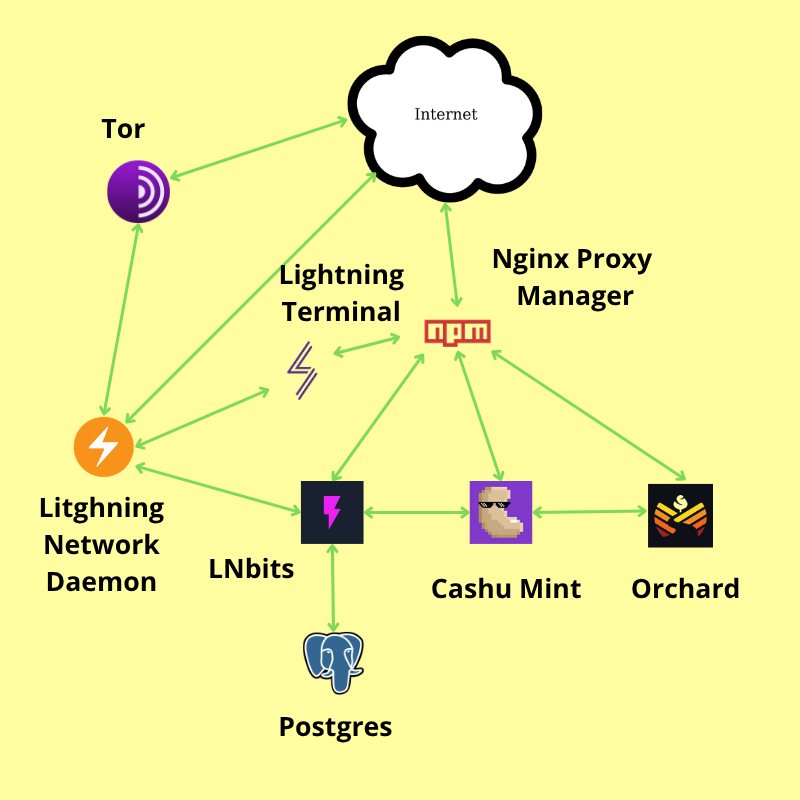
Description: The schema shows the Docker containers (Tor, Lightning Network Daemon, Lightning Terminal, LNbits, Postgres, Cashu, Orchard, and Nginx Proxy Manager). Arrows indicate communication between services.
1.3 Installing Requirements
1.3.1 Installing Docker and Docker Compose
Most VPS providers give direct root access by default. If this is your case, omit the use of sudo in all commands. To confirm your current user, run:
whoamiIf the command output is root you don't need sudo in front of the following commands:
sudo apt update && sudo apt upgrade
# Debian 12+
sudo apt install docker.io docker-compose
# Ubuntu 24.04+
sudo apt install docker.io docker-compose-v21.3.2 Adding our user to the Docker group
If the output of the whoami command we ran earlier was root, skip this step. Otherwise, run the following command:
sudo usermod -aG docker $(whoami)This will allow us to run the docker command without privileges.
1.3.3 Cloning the Project Repository
git clone https://github.com/cashu4community/cashu4cs-deploy.git
cd cashu4cs-deploycashu4cs-deploy directory.
1.4 Initial Configuration
To start the infrastructure, several parameters need to be configured. It is recommended to save them in a document as they will be needed in the following tutorial sections.
1.4.1 Configuring Lightning Network Daemon Parameters
Changing the Public IP of the Lightning Node
To get the public IP we will use the script get_public_ip.sh located in the root of the cashu4cs-deploy directory.
./get_public_ip.shThis returns an output like the following:
72.61.27.142Knowing this IP we are going to edit the lnd.conf file.
nano app-data/lnd/lnd.confWe look for the line externalip= and add the obtained IP 72.61.27.142.
Image 2: lnd.conf file parameter externalip=.
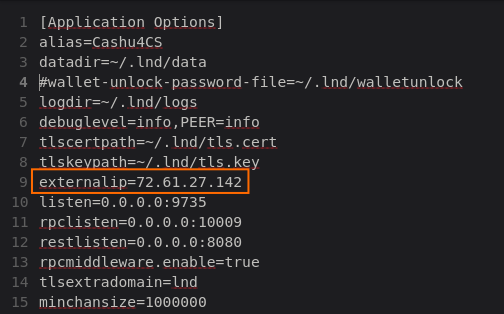
Save and exit the file ctrl+s and ctrl+x
Changing the LND Node Alias
The alias is useful to find the node in Lightning network explorers like mempool.space or amber.space. To change it, edit the lnd.conf file again and look for the line alias=; for this tutorial we will use Cashu4CS as the LND node alias.
Image 3: lnd.conf file parameter alias=.
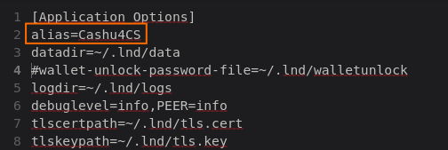
Creating the Password for the LND Node Wallet
The LND node wallet creation process that we will see later asks for a password used to encrypt the wallet and unlock it every time the service restarts. This must be at least 12 characters and must have a combination of uppercase and lowercase letters, numbers, and special characters like: E.g *-+. Once created, the password is entered into the walletunlock file located in app-data/lnd/.
For this tutorial we will use +6Mn31qVwLC- as the wallet password.
nano app-data/lnd/walletunlockImage 4: walletunlock file with the password created above.
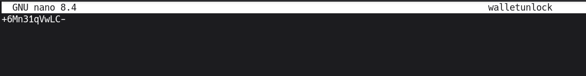
Save and exit the file ctrl+s and ctrl+x
walletunlock file will allow us to automatically unlock the node wallet after a Docker container restart. This is the reason why it contains the password.
1.4.2 Creating the Password for Lightning Terminal Access
To access the Lightning Terminal service (from now on LIT), a password is needed. It must have the same complexity requirements as the one used for the LND wallet. Once generated, we save it in the lit.conf file located in app-data/lit/.
Once the password is created, we edit the lit.conf file.
nano app-data/lit/lit.confWe look for the line uipassword= and enter the password. We will use +dFskhU8d35* as an example for the tutorial, resulting in:
Image 5: lit.conf file with the password created to access the LIT web interface.
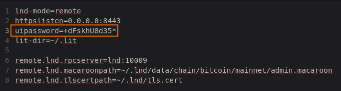
Save and exit the file ctrl+s and ctrl+x
1.4.3 Setting LNbits Configuration Parameters
The LNbits service needs the AUTH_SECRET_KEY defined in the .env file and the PostgreSQL database password to function.
Generating the AUTH_SECRET_KEY
openssl rand -hex 32This returns something like:
f92a03c2e12362f092b6589bde08b0433cd08f4ffe9ef894fe8e01660d18054fCopy the key and edit the .env file located in app-data/lnbits/.
nano app-data/lnbits/.envLook for the line AUTH_SECRET_KEY and paste the key generated in the previous step.
Image 6: .env file with the AUTH_SECRET_KEY created above.
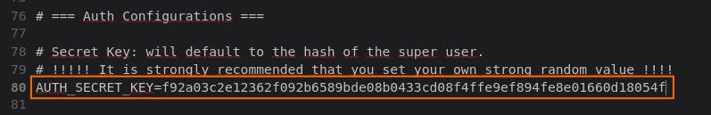
Save and exit the file ctrl+s and ctrl+x
Creating the PostgreSQL Database Password
Now we need to create the password that LNbits will use to create the PostgreSQL database. We will enter it in the .env file we edited earlier and in the docker-compose.yml file located in the root of the cashu4cs-deploy directory.
Edit the .env file.
nano app-data/lnbits/.envLook for the line LNBITS_DATABASE_URL="postgres://lnbits_user:dbpassword_@db:5432/lnbits_db" and replace dbpassword_ with our password. We will use 3Edf56gh.*FU as an example.
Image 7: Variable LNBITS_DATABASE_URL for database connection using the password generated above.
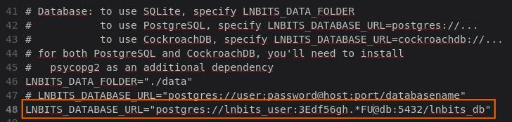
Save and exit the file ctrl+s and ctrl+x
Now edit the docker-compose.yml file.
nano docker-compose.ymlLook for the docker service db: and edit the environment: section variable POSTGRES_PASSWORD, resulting in:
Image 8: POSTGRES_PASSWORD variable updated with the generated password.
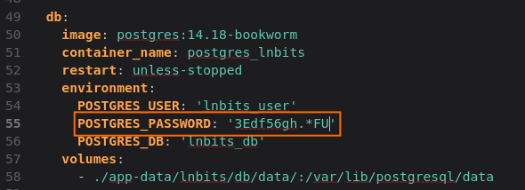
Save and exit the file ctrl+s and ctrl+x
1.4.4 Setting Cashu Mint Configuration Parameters
For the proper functioning of the Cashu Mint, we must generate the variable MINT_PRIVATE_KEY= and the SSL certificates used to encrypt the RPC connection from the Orchard service to the Mint.
Creating the MINT_PRIVATE_KEY variable
openssl rand -hex 32This returns something like:
cf33ffb9af447b1210e052548f911ba62639a6a653f7066809bacecb7436ea4bJust like we did with LNbits' AUTH_SECRET_KEY, copy the above key and edit the .env file located in app-data/cashu/.
nano app-data/cashu/.envLook for the line MINT_PRIVATE_KEY= and paste the key generated in the previous step:
Image 9: MINT_PRIVATE_KEY variable updated in the .env file.
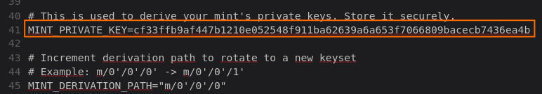
Save and exit the file ctrl+s and ctrl+x
Generating SSL Certificates for RPC Connection
Go to the certs directory located in app-data/cashu/
cd app-data/cashu/certsExecute the script generate_certificates.sh
./generate_certificates.shThis script generates all the necessary certificates for the RPC connection. If no error occurred, the certificates are in this directory.
ls .
ca_cert.pem ca_private.pem client_cert.pem client_private.pem generate_certificates.sh server_cert.pem server_private.pem1.4.5 Setting Orchard Configuration Parameters
We need to generate the SETUP_KEY used in the Orchard initialization.
openssl rand -hex 16The result would be
d5c454540c045373b5bac4a58b0b52e8Copy the above key and edit the .env file located in app-data/orchard/.
nano app-data/orchard/.envLook for the line SETUP_KEY= and paste
Image 10: SETUP_KEY variable updated in the .env file.
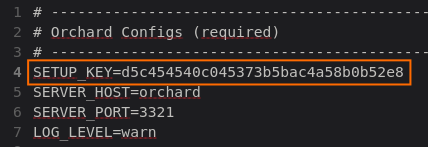
Save and exit the file ctrl+s and ctrl+x
1.5 Service Management
| Command | Action |
|---|---|
docker-compose up -d |
Starts the complete infrastructure; downloads images on first execution. |
docker-compose down |
Stops all services in a controlled manner and removes containers. |
docker-compose up --force-recreate [service] -d |
Rebuilds a specific container after making changes to its configuration. |
docker-compose start [service] |
Starts the container. |
docker-compose stop [service] |
Stops a container. |
1.5.1 Service Names
Below are the names of the infrastructure services, useful if you want to execute the start, stop, or rebuild commands from the table above.
- Financial:
lnd,cashu(Mint),lnbits. - Management and Network:
lit(Lightning Terminal),npm(Proxy Manager),tor,orchard. - Persistence:
db(PostgreSQL),redis.
1.6 Starting the Infrastructure
To start the infrastructure, execute:
docker-compose up -dThe first time this command is executed, the service docker images are downloaded.
Image 11: Downloading images during the startup process.
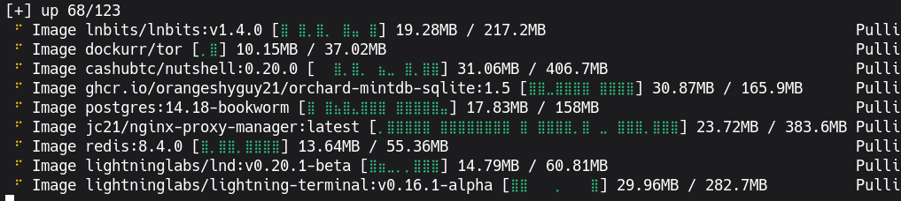
If the previous step occurred without a hitch, executing:
docker psShows the started containers
Image 12: List of running containers.
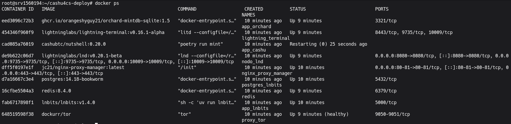